Ident reads a pilot's roster and puts it on the wall at home: where they are, when they land, and when they'll be through the door. When crewing change their mind, the wall changes with it.
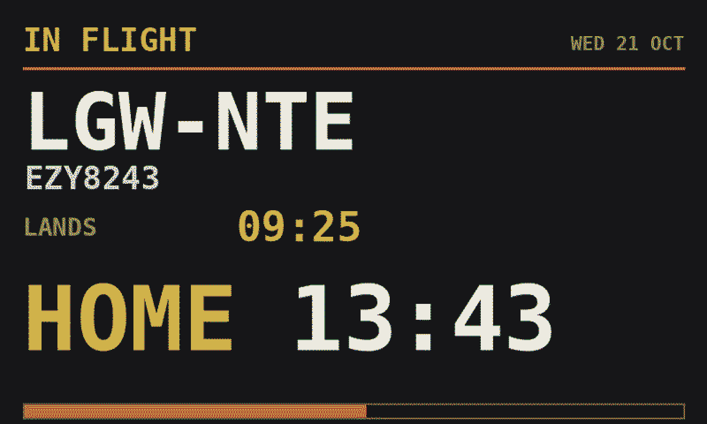
Solari board, the default. Drawn by Ident from a sample roster.
01 / What it answers
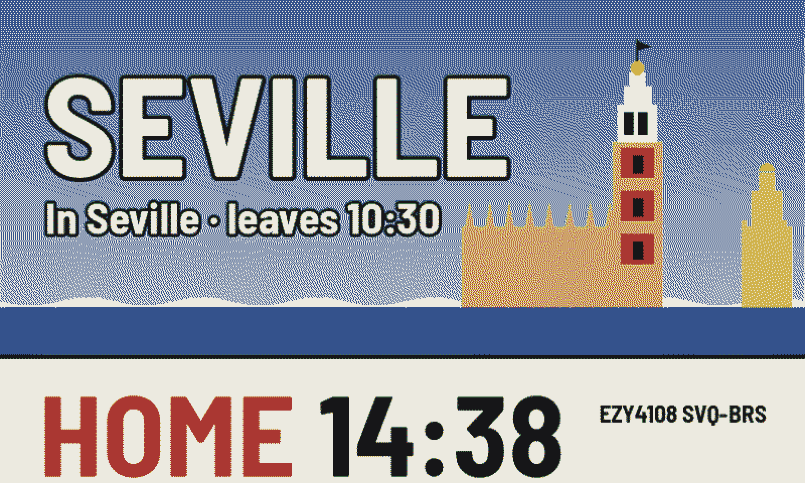
Today's destination, big enough to read from the door, and when they're home along the foot.
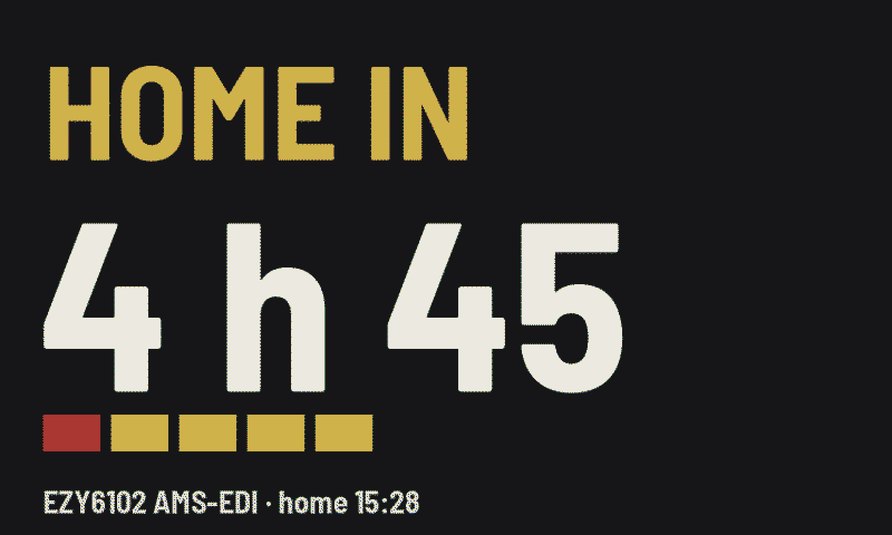
“Home in 4 h 45”, with a block for every hour still to go. Old enough to read a clock is old enough to work out when Mum or Dad lands.
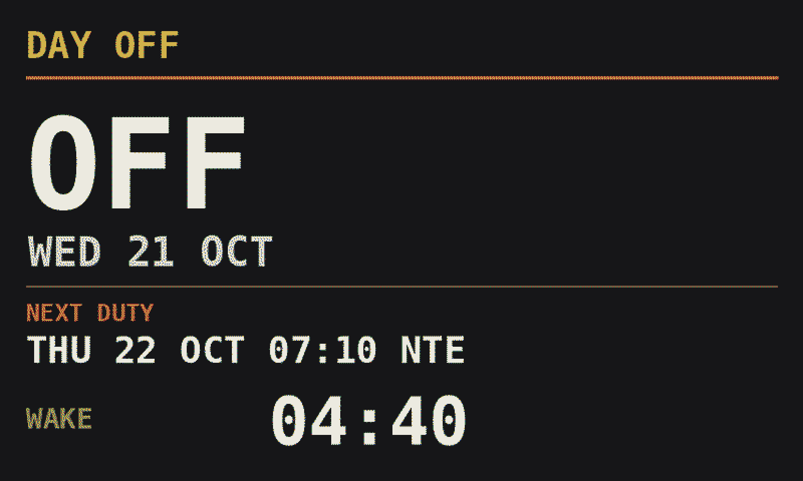
The next duty as well as this one, so the people at home can see how much time they have with you. On a day off it's already there.
02 / How it works
A pilot's day can change in an instant, and by the time they can tell you it's often too late. Ident follows the roster as it changes. No mental maths, no waiting for a text when they land: if they're delayed, the wall shows it.
Add your crew calendar link once. Ident checks it for changes by itself, and the wall follows.
Off, standby, report, airborne, turnaround, heading home: the board follows where you actually are.
On chocks, debrief, the walk to the car and the drive: the home time allows for all of it.
03 / At a glance
The status colour style turns the whole board one colour: blue flying, red at work, green home. Read it from the door.
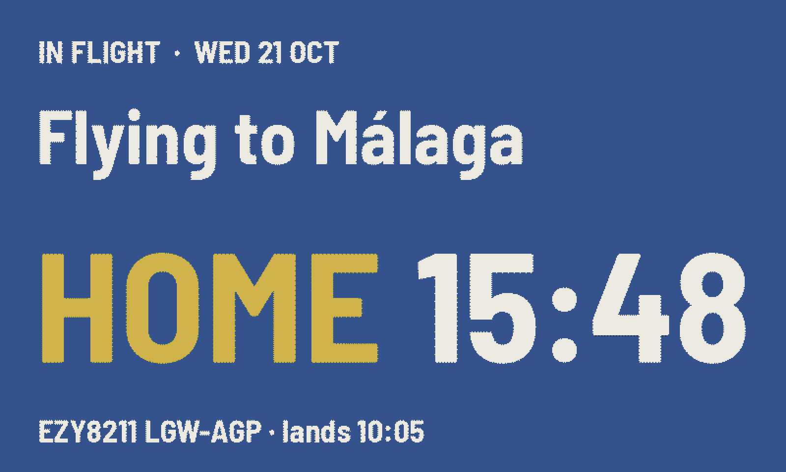
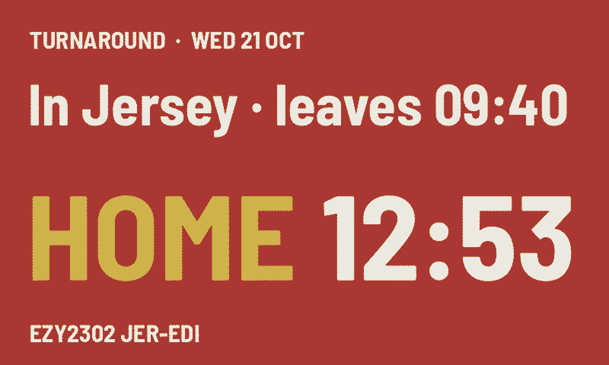
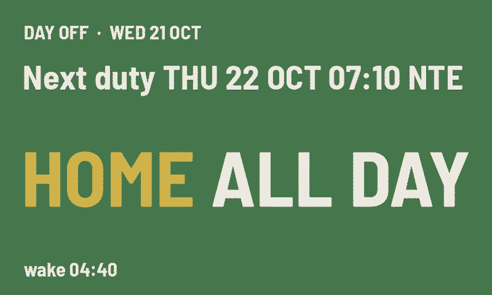
04 / Displays
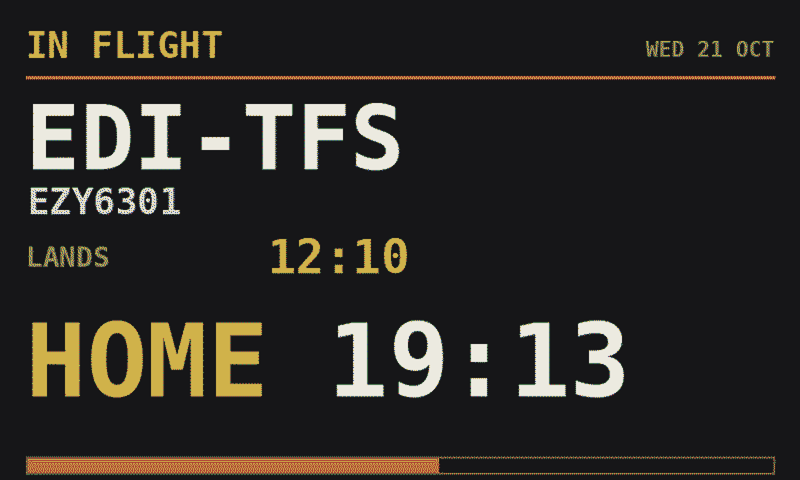
Ready-made. Seeed's reTerminal E1002: 7.3″ colour e-paper with its own battery, case and stand. Nothing to build; it runs on its battery and sleeps between checks.
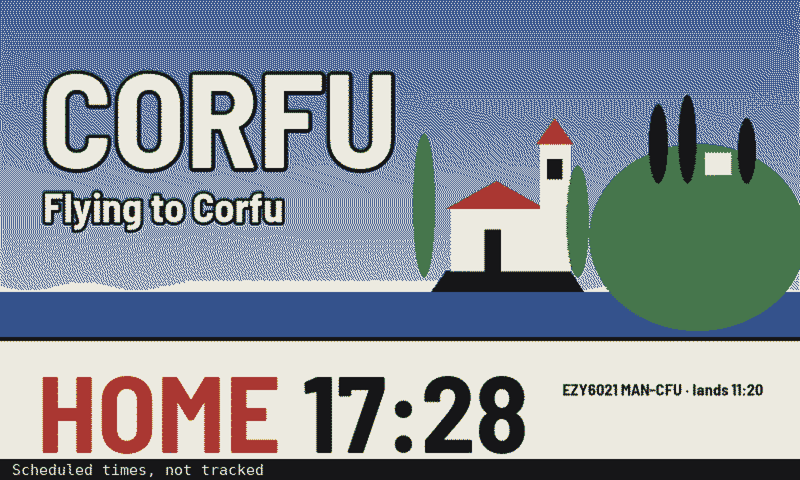
A Raspberry Pi and a Pimoroni Inky Impression, 4.0″ to 13.3″. No soldering; allow an unhurried hour. Every style, and settings from your phone at any time.
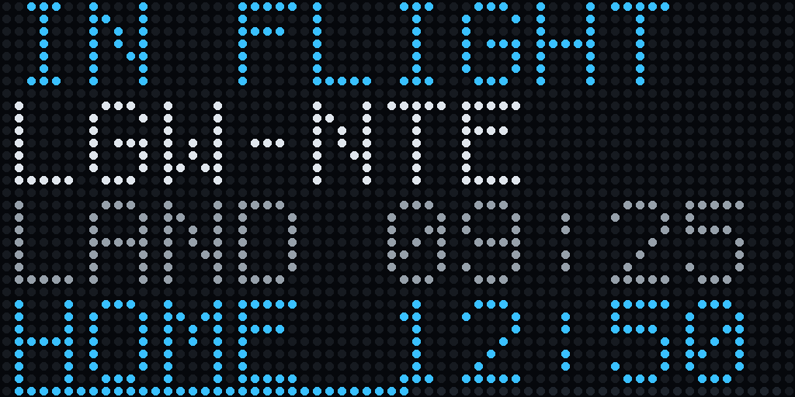
A departure board that glows. One 64×32 HUB75 panel, or two side by side (128×32) for longer names. Bright, instant, and more of a project.
The LED picture is a preview from Ident's simulator; a real panel draws the same lines in plainer pixel lettering.
05 / Privacy
We never receive your roster. If you switch on flight status, each flight's number, departure airport and time go through our server to Flightradar24, from 20 minutes before departure until it lands. If you switch on drive times, your home location (or a nearby corner, if you prefer) goes through our server to Google Maps on the way home. Neither is kept. Everything that leaves your display.
Sickness, compassionate leave, fatigue, a meeting: sensitive roster codes such as FTGD, UNFT, SOC or MEET are hidden by default and show as an ordinary day off. They're discarded when your roster is read, so they never reach the device's storage. You choose which, if any, to show.
06 / Follow the flight
While you're airborne, Ident can show a code that opens your flight live on Flightradar24. Press a button and it fills the screen, big enough to scan from across the room, or keep a small one in the corner.
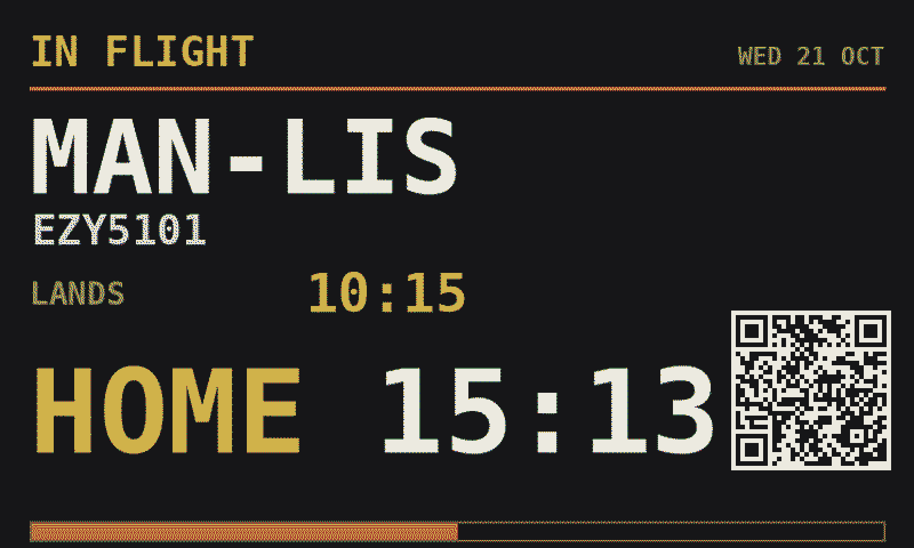
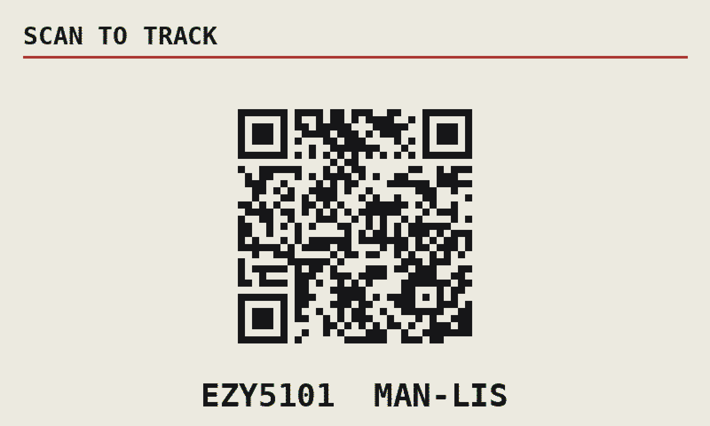
07 / Prices
The price is all you pay: no VAT to add, no other fees. Cancel online in two clicks. Flight data: Flightradar24.
08 / Setting up
No keyboard, no monitor. Out of the box the screen shows how to begin. It raises its own Wi-Fi network: join it from your phone, pick your home network, paste your roster link, and the board appears about a minute later.
About 30 seconds to redraw, so it changes when something changes rather than ticking. Want live movement? Choose LED.
Built and tested on easyJet eCrew rosters. Fly for someone else? Help us add your airline, and the software is yours free.
We sell the software. No hardware markup, nothing proprietary. The parts list says exactly what to buy.
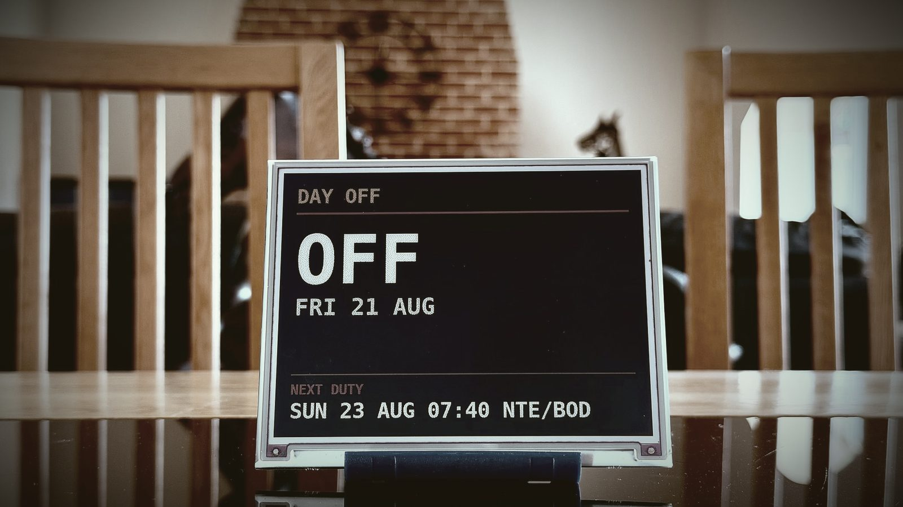